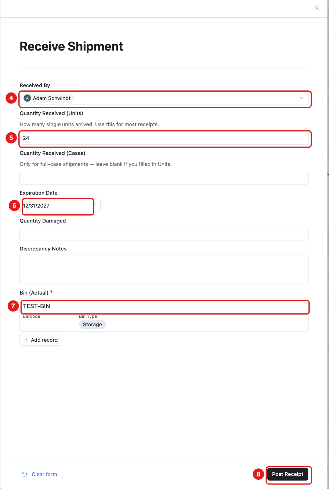
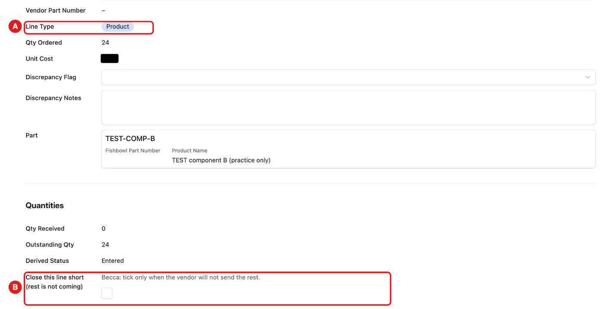
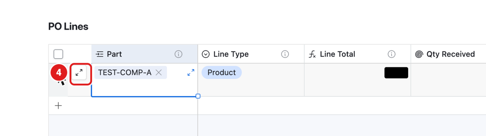

Read this first
- Until December 1, real work stays in Fishbowl. In RemBase you only look, or you practice on TEST items.
- Your practice items: first PO TEST-PRACTICE-BECCA (finish it in Task 4), new PO TEST-PRACTICE-BECCA-2 with your parts TEST-BECCA-A (#9111#) and TEST-BECCA-B (#9112#), bin TEST-BIN (#9001#).
- RemBase saves by itself. There is no Save button. Press Tab or click outside the box.
- Never delete anything. If something gets deleted by mistake, tell Adam. Nothing else is needed.
- Made a typing mistake? Press Cmd+Z (Ctrl+Z on Windows) right away to undo it.
- While you practice, never press these buttons:
- Email PO
- Email Staged POs
- Delete Staged POs
- Create “…” in a part list
- Escalate To Asana
- Anything on the Ads page
- The Amazon buttons on FBA Shipment
- The label buttons on CC Orders
- Everything else in these steps is safe. You do not have to worry about breaking anything.
Order: do Tasks 1, 2 and 3 any day. Do the practice tasks in this order: 4 → 5 → 6.
Task 1 – Morning check on Home (look only)
Goal: see today’s sales, our Amazon storage space and our aged stock in one place.
- In the RemBase menu, click Home, then Home.
- Sign in with your work Airtable account if it asks.
- Look at the first box, Today so far.
- This is today’s Amazon sales, so far. It updates every hour.
- It is not the full day. D – Note says how much is an estimate.
- Scroll down to Sales (Amazon.com). Look at Last full day sales.
- This is yesterday’s final number.
- Scroll down to FBA storage space. Look at E – Level.
- OK (green) = fine.
- Watch (yellow) = 85% of our limit or more.
- Over (red) = 100% of our limit or more. If you see red, tell Adam.
- Scroll down to Aged FBA stock (181+ days).
- The big number = all our units at Amazon that are 181 days old or more.
- Look at the list under it, Aged stock by brand.
- Each brand has a group. The grey header line shows that brand’s totals.
- Columns:
- Units 181-270 / 271-365 / 365+ = how old.
- Est. Surcharge = Amazon’s estimated aged-stock fee.
- Est. Storage Next Month = next month’s storage cost.
- Sell-through = how fast it sells.
- Recommended Action and Recommended Sale Price = Amazon’s advice. Blank = Amazon gave none.
- Look at the Snapshot Date column.
- This is the day Amazon counted the ages, usually a few days before today.
- Optional: open a product in the aged list (point at the row and click the expand button). In Your plan, choose a Plan and add a Plan Note. You cannot change the numbers.
Done when: you have looked at all four parts.
More help: Home.
Task 2 – Open the Inventory Pipeline file (look only)
Goal: open the newest Inventory Pipeline file for ordering and send-in planning.
- In the RemBase menu, click Home, then Reports.
- At the top, look at the two counters: A – Reports late or stale and B – Library not refreshed (36 h).
- Both should be 0.
- If one is not 0, look at the list Late or stale now under them and tell Adam which report.
- Find the list Newest file of each report. Click All brands to open that group.
- Find the row Inventory Pipeline.
- C – Status should say OK.
- Make sure you are signed in to Google with your work account.
- Click Drive Link on the Inventory Pipeline row.
- The file opens in Google Drive. It is the same file you used before.
- To find an older file: scroll down to Older files (history) and click Inventory Pipeline.
- Older files are listed, newest first.
- To see one brand only (for reports made per brand): click Filter.
- Filter changes only your own view.
- A number next to Filter means a filter is still on. Remove it when you finish.
Done when: the newest Inventory Pipeline file is open in Drive.
More help: Home → Reports.
Task 3 – Check listing alerts (look only)
Goal: see which listings need you today.
- In the RemBase menu, click Home, then Listings.
- Look at the four counters:
- G – Open P1 (urgent)
- H – Open P2
- I – Not buyable / status problems
- J – Buy box problems
- Look at the list Open P1 alerts (oldest first). These are the urgent ones.
- P1 = it sells 10 or more a month, and it is out of stock, not active, or the buy box is suppressed while it has stock. For our own brands, also when we lost the buy box.
- The Brand column shows the brand of each row. The chart Open alerts by brand shows how many each brand has.
- For each row, read Alert Type and Detail.
- Detail says what is wrong or what changed.
- Look at Caused by.
- If it names another alert, this alert happens only because of that one. Fix the main one first.
- Click the alert to open it, then click Amazon Link to open the listing on Amazon.
- Fix the problem your normal way in Seller Central. RemBase does not change Amazon.
- The alert closes by itself on a later daily run, after the problem is gone.
- After you fix it, open the alert again. In Your check, tick Checked and write a Note (what you did).
- Good to know:
- Overwrite = Amazon shows something different from what we sent. On wholesale brands this is normal, because the brand owner’s data wins.
- In the list Content changes, last 7 days, Expected means someone planned that change ahead of time.
- Discontinued items and other low-priority alerts (P3) are hidden.
Done when: you have looked at every P1 row, and ticked Checked on the ones you fixed.
More help: Home → Listings.
Task 4 – Practice: finish your first PO, then receive your new PO (TEST only)
Goal: finish your first practice PO, then receive your new one.
Always pick the bin. If a receipt has no bin, nothing is added to stock, and a flag appears within about an hour.
Already saved a receipt with no bin? Do not receive again. Open the receipt: Receiving → your PO line → Received so far → click the receipt with no bin. In the box Add the bin (receipt not posted yet), type or scan the bin barcode and press Enter. For practice, TEST-BIN’s barcode is #9001#. It posts once.
Pick the line by product name (TEST component A or TEST component B), not by number.
If a line already says Fulfilled, you already received it. Go to the next line.
Part 1 – Finish your first PO (TEST-PRACTICE-BECCA)
| Product | Ordered | Received | Still open |
|---|---|---|---|
| TEST component B (TEST-COMP-B) | 24 | 0 | 24 |
| TEST component A (TEST-COMP-A) | 24 | 1 | 23 |
Your first PO also has an empty line you started (…-L3). You can type 10 in its Qty Ordered, or leave it.
TEST component B: receive all 24
TEST component B shows 24 still to receive. That is correct. If you already saved a receipt there without a bin, add the bin (see the box above) instead of receiving again.
In the RemBase menu, click Receiving.
Click Search at the top of the list and type TEST-PRACTICE-BECCA.
Click the row for TEST component B.
Look at Received so far.
- This check stops you from receiving twice.
Click Receive. The Receive Shipment form opens.

4 – Received By: choose Becca.
5 – Quantity Received (Units): type 24. Leave Cases empty.
6 – Expiration Date: type 12/31/2027.
7 – Bin: scan or type #9001# into Bin Scan, or under Bin (Actual) click + Add record, type TEST-BIN, and click it.
Check every box again.
Click 8 – Post Receipt.
- You should see the receipt under Received so far.
- Derived Status = Fulfilled, and Outstanding Qty = 0.
- The line leaves the Receiving list. That is correct.

TEST component A: receive part, then close it short
- Back on Receiving, search TEST-PRACTICE-BECCA again.
- Click the row for TEST component A.
- Look at Received so far. It already shows 1 unit, from a test on 10/19.
- Click Receive.
- Received By: Becca.
- Quantity Received (Units): 20.
- Expiration Date: 12/31/2027.
- Bin: TEST-BIN (#9001#).
- Click Post Receipt.
- You should see Derived Status = Partial and Outstanding Qty = 3.
- Pretend the vendor confirmed that the last 3 are not coming. (In real work, Chad checks with the vendor, then Vicky ticks this box. You are the backup.)
In the Quantities group, tick B – Close this line short (rest is not coming).

You should see Derived Status = Closed Short and Outstanding Qty = 0. The line leaves the list.

Part 2 – More practice: receive TEST-PRACTICE-BECCA-2
- Search TEST-PRACTICE-BECCA-2 on Receiving.
- Receive TEST-BECCA-A and TEST-BECCA-B (24 each) the same way, into TEST-BIN.
If you make a mistake, you may press Reverse this receipt, then receive again. See Fix a wrong receipt.
Done when: all lines of both POs have left the Receiving list.
More help: Receiving.
Task 5 – Practice: close a TEST flag (TEST only)
Goal: read a flag and mark it done.
- In the RemBase menu, click Flags, then All Open Flags.
- Do not use My Open Flags. It looks empty, because flags are not assigned to people yet.
- Search TEST-PRACTICE-BECCA.
- Click the flag Receipt reversed: TEST-PRACTICE-BECCA-L2.
- Read the title and the Note.
- The note says to receive the line again with the right numbers. You did that in Task 4.
- Set Status to Resolved.
- The flag leaves the open list.
- If Task 4 made any new flag with TEST in the title, open it, read it and set it to Resolved too.
- Do not tick Escalate To Asana. It makes a real Asana task.
- Leave every real flag alone (no TEST in the title).
- Before December 1, real problems are fixed in Fishbowl.
Done when: no open flag for TEST-PRACTICE-BECCA is left.
Task 6 – Practice: add a line to a PO and open the PO PDF (TEST only)
Goal: add one line to your new practice PO (TEST-PRACTICE-BECCA-2) and see the PDF update.
In the RemBase menu, click Purchase Orders.
Search TEST-PRACTICE-BECCA-2 and click the PO number.
- Only open PO numbers that start with TEST- or PRACTICE-. Real POs look like 2026-061.
In PO Lines, click the + under the last line.
- A new empty line appears.
Click the + in the new line’s Part cell.
Type TEST-BECCA-A and click it in the list.
- Never click Create “…” at the bottom of the list.
Point at the new line and click the expand button (two small arrows).

Qty Ordered: type 10.
Unit Cost: type 1.00.
- If you leave Unit Cost empty, RemBase fills the last price paid and shows Check it.
Press Tab. RemBase saves by itself.
Close the line (the ✕ at the top).
- You should see the new line in PO Lines.
Wait a few minutes. Then click the file under PO PDF.
- The PDF now shows your new line. RemBase makes the PDF by itself.
Do not change Status. It changes by itself (Issued / Partial / Fulfilled).
Do not press Email PO.
Extra practice (optional): your new line now shows on Receiving. You can receive it as in Task 4 (10 units, TEST-BIN).

Done when: your new line shows in the PO PDF.
More help: Purchase Orders.
Not in these steps (and why)
- PO Planning, Run Planning, New Part: the ticks are shared with real planning, and there is nothing safe to practice before December 1. You can look at them.
- Cycle count, production runs, Next shipment: floor jobs (Chad and Sabith).
- Claims: Karly’s weekly task.
- Ads: on hold.